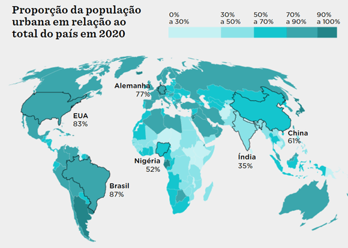
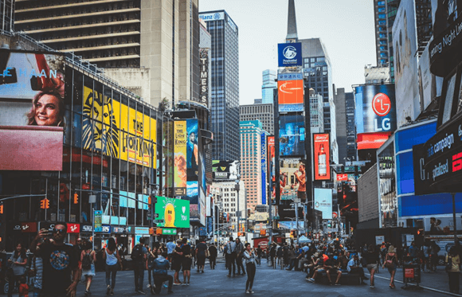
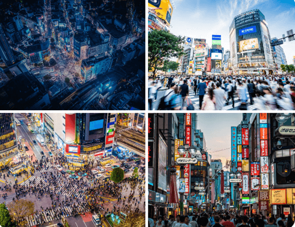
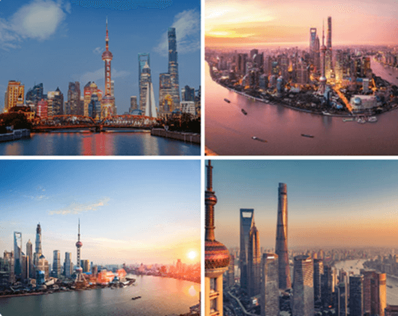
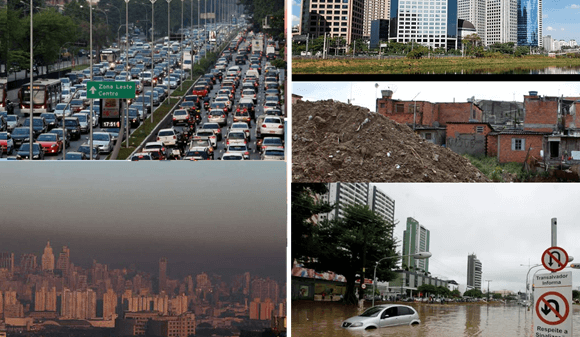
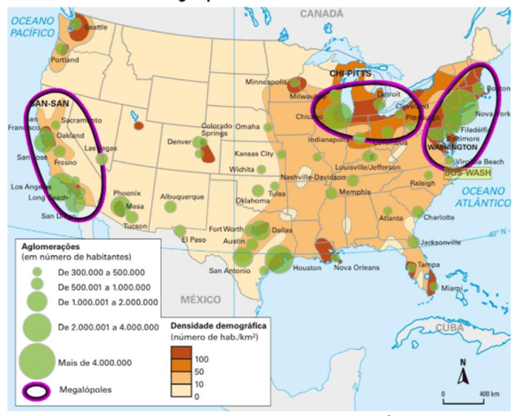
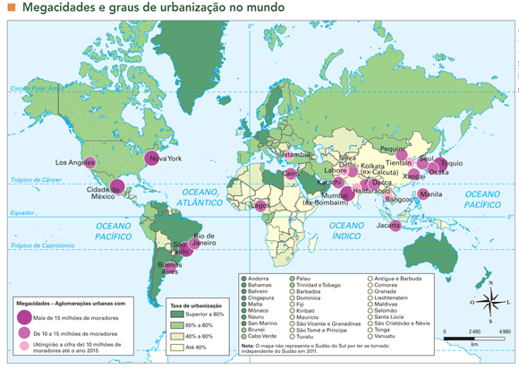
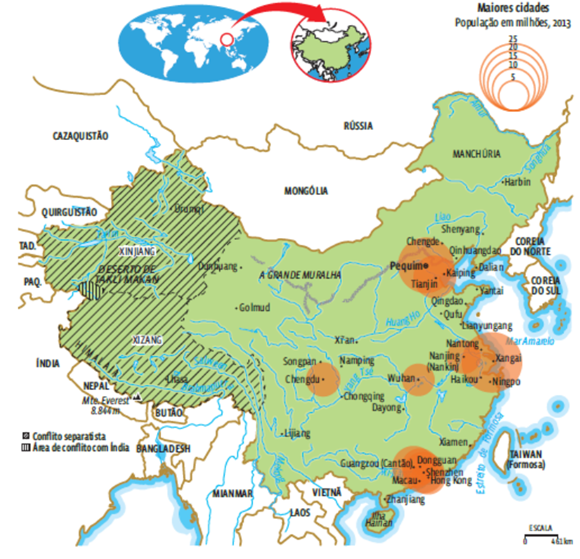
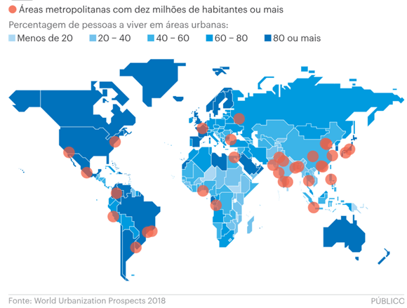
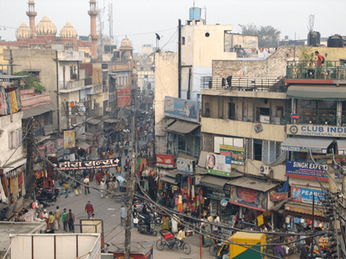

Conteúdo: Urbanização; Metropolização; população urbana; Cidades globais; Megacidades;
Êxodo rural.
Objetivo: Compreender o processo de urbanização mundial e as transformações do espaço
geográfico decorrente da dinâmica da população urbana no mundo.
Digite seu nome
Introdução
Na aula anterior, vimos a dinâmica da agropecuária mundial e os sistemas
agrícolas.
Hoje, veremos o outro lado desse processo através da urbanização, isto é, o crescimento das cidades, das
megacidades e megalópoles.
Nesta aula, exploraremos o que é urbanização, suas causas e consequências, além de analisar exemplos de
países e dados atuais para uma visão crítica desse fenômeno.
Questões para serem respondidas no caderno sobre o tema da aula de hoje:
1. Explique o que é urbanização e como ela está relacionada ao crescimento da população nas áreas
urbanas.
2. Cite dois fatores que podem impulsionar a urbanização, de acordo com o texto, e explique como
esses fatores contribuem para o fenômeno.
3. Descreva as consequências da urbanização mencionadas no texto, destacando pelo menos duas áreas
afetadas por esse processo.
4. Com base nos exemplos apresentados no texto, discuta as características e desafios de uma
megalópole e uma megacidade.
5. Por que a urbanização desigual é um tema importante mencionado no texto? Dê exemplos de
disparidades que podem surgir dentro das cidades.
Resumo: Urbanização
Definição de Urbanização:
Processo de crescimento populacional em áreas urbanas. Envolve desenvolvimento de infraestrutura como edifícios, estradas e sistemas de transporte. Relacionada à migração e industrialização.
Exemplo: China
Urbanização acelerada com migração em massa das áreas rurais para as cidades. Cidades como Pequim, Xangai e Guangzhou cresceram exponencialmente.
Cidades e Urbanização Global:
Cidades são centros da urbanização e desempenham um papel vital na economia e cultura global.
Centralidade Urbana:
Concentração de atividades econômicas e sociais no centro das cidades. Exemplos: Times Square (Nova Iorque), Shibuya (Tóquio), Xangai (China).
Consequências da Urbanização:
Poluição do ar e da água. Pressão sobre recursos naturais. Desigualdade social e problemas de saúde pública. Exemplo: São Paulo, Brasil.
Rede Urbana e Conurbação:
Interconexão de cidades através de fluxos de pessoas, mercadorias e informações. Exemplo: BosWash (EUA), BosWash é uma conurbação na costa leste dos EUA, englobando várias grandes cidades.
Megalópoles e Megacidades:
Megalópoles: Regiões altamente urbanizadas que conectam várias cidades. Exemplo: Baiyue Dianchi (China). Megacidades: Centros urbanos com mais de 10 milhões de habitantes. Exemplo: São Paulo (Brasil).
Urbanização Desigual:
Disparidades na distribuição de recursos e infraestrutura dentro das cidades. Exemplo: Índia, onde o êxodo rural levou ao crescimento de cidades como Mumbai e Nova Delhi, criando desafios de infraestrutura e habitação.
Urbanização e Industrialização:
Exemplo: Revolução Industrial na Inglaterra, com cidades como Manchester crescendo devido à concentração de fábricas.
Reflexão:
Como promover uma urbanização mais sustentável e inclusiva?
O Que é Urbanização?
Dos 7,8 bilhões de habitantes do planeta, 56,2% vivem em áreas urbanas e 43,8% em áreas rurais em 2020. O
mundo passou a ser majoritariamente urbano em 2007. A urbanização refere-se ao processo pelo qual uma
população cresce em centros urbanos, resultando no aumento da proporção de pessoas que vivem nessas áreas em
relação às áreas rurais.
Ela envolve o desenvolvimento de infraestrutura urbana, como edifícios, estradas,
sistemas de transporte, redes de abastecimento de água e energia, entre outros. A urbanização pode ser
impulsionada por diversos fatores, como migração, industrialização, modernização agrícola e busca por
oportunidades econômicas.
Exemplo: China
A China é um exemplo impressionante de urbanização acelerada. Nos últimos anos, o país testemunhou um êxodo
rural em massa, com milhões de pessoas migrando das áreas rurais para as cidades em busca de trabalho e
melhores condições de vida. Cidades como Pequim, Xangai e Guangzhou cresceram exponencialmente, tornando-se
centros econômicos globais.
As Cidades: Urbanização e Principais Cidades do Mundo
As cidades são os centros da urbanização, onde a maioria da população mundial vive e trabalha. Elas
desempenham um papel vital na economia global, na cultura, na política e no desenvolvimento humano.
Principais aglomerações urbanas no mundo
Posição
Aglomerado Urbano
País
População (2000)
População (2020)
1
Tóquio
Japão
33,5 milhões
37,4 milhões
2
Delhi
Índia
15,9 milhões
31,7 milhões
3
Xangai
China
14,9 milhões
27,1 milhões
4
São Paulo
Brasil
18,4 milhões
22,1 milhões
5
Cidade do México
México
18,1 milhões
22,1 milhões
6
Cairo
Egito
14,1 milhões
21,1 milhões
7
Mumbai
Índia
16,5 milhões
20,4 milhões
8
Pequim
China
13,6 milhões
20,4 milhões
9
Dhaka
Bangladesh
10,6 milhões
20,0 milhões
10
Osaka
Japão
16,3 milhões
19,2 milhões
Fonte:
World Urbanization Prospects: The 2018 Revision" do Departamento de Assuntos Econômicos e Sociais da
ONU
Os dados da tabela acima fornecem uma visão geral das megacidades e grandes áreas metropolitanas que têm um
papel significativo na urbanização global. Nota-se um crescimento populacional considerável ao longo das
duas décadas em todas as aglomerações listadas, refletindo o contínuo processo de urbanização em diversas
partes do mundo.

Fonte: https://www.nexojornal.com.br
Exemplo: Nova Iorque, Estados Unidos
Nova Iorque é um exemplo de cidade global que exerce uma influência significativa em escala mundial. É um
centro financeiro, cultural e de mídia, abrigando a Bolsa de Valores de Nova Iorque, a sede das Nações
Unidas e uma vibrante cena artística.
Centralidade Urbana
A centralidade urbana refere-se à concentração de atividades, como comércio, serviços, lazer e cultura, no
centro das cidades. Isso cria um núcleo dinâmico e movimentado, mas também pode levar a problemas de
congestionamento, poluição e desigualdade.
Times Square, Nova Iorque, EUA
Um dos ícones mundiais de centralidade urbana, Times Square é conhecida por suas luzes brilhantes,
teatros da Broadway, lojas de varejo, restaurantes e uma atmosfera vibrante que atrai milhões de
turistas todos os anos.

Fonte: Pexels. Time Square, Nova Iorque, Estados
Unidos.
Shibuya, Tóquio, Japão
Shibuya é um distrito movimentado de Tóquio, famoso por sua enorme interseção de pedestres (Shibuya
Crossing), lojas de moda, restaurantes, cafés e vida noturna agitada. É um centro cultural e
comercial da cidade.

Fonte: Pexels. Distrito de Shibuya, Tóquio, Japão.
Xangai, China
Xangai é uma aglomeração urbana vibrante na China, conhecida por sua paisagem urbana impressionante,
centros comerciais luxuosos e uma mistura de arquitetura moderna e histórica. A cidade é um
importante centro financeiro e cultural, oferecendo uma variedade de opções para entretenimento,
compras e gastronomia. Entre os destaques de Xangai estão a Torre Pérola Oriental, o Bund à
beira-rio com seus edifícios históricos, o moderno distrito de Pudong com arranha-céus imponentes,
além de uma vida noturna diversificada e movimentada. Xangai é um exemplo fascinante de urbanização
acelerada, representando o dinamismo e a modernidade da China contemporânea.

Fonte: Pexels. Xangai, China.
Como a centralidade urbana impacta a vida dos cidadãos em termos de acesso a serviços e qualidade de
vida?
As Consequências da Urbanização
A urbanização tem consequências profundas para o meio ambiente, a sociedade e a economia. Isso inclui
questões como poluição do ar e da água, pressão sobre os recursos naturais, aumento da demanda por
habitação e serviços, desigualdade social e problemas de saúde pública.
Exemplo: São Paulo, Brasil
São Paulo é uma megacidade que enfrenta desafios significativos devido à urbanização rápida e
desordenada. A poluição do ar, o congestionamento do tráfego e a falta de espaços verdes são algumas das
questões críticas que a cidade enfrenta.

Fonte: Pexels. Cidade de São Paulo, Brasil.
Rede Urbana, Conurbação e Áreas Metropolitanas
A rede urbana refere-se à interconexão de cidades e centros urbanos por meio de fluxos de pessoas,
mercadorias e informações. A conurbação é o processo pelo qual áreas urbanas vizinhas crescem e se
fundem, formando extensas regiões metropolitanas.
Exemplo: BosWash, Estados Unidos
A região de BosWash é um exemplo de conurbação, estendendo-se ao longo da costa leste dos Estados Unidos
e englobando cidades como Boston, Nova Iorque, Filadélfia e Washington, D.C. Essa região forma uma das
maiores e mais importantes áreas metropolitanas do mundo.

Fonte: Histoire Géographie: Le monde d’aujourd’hui.
Paris: Hachette Éducation, 2003.
Megalópoles e Megacidades
Megalópoles são regiões altamente urbanizadas que se estendem por centenas de quilômetros, conectando
várias cidades e áreas metropolitanas. Megacidades são centros urbanos com mais de 10 milhões de
habitantes.

Fonte: Fonte: Vesentini (2013).
Exemplo: Baiyue Dianchi, China
Baiyue Dianchi é uma megalópole em formação na região do Delta do Rio das Pérolas, na China.
Compreendendo cidades como Cantão, Shenzhen, Hong Kong e Macau, essa região é uma das áreas
metropolitanas mais densamente povoadas do mundo.

A Urbanização Desigual
A urbanização nem sempre é um processo equitativo, e muitas vezes vemos disparidades significativas na
distribuição de recursos, infraestrutura e oportunidades dentro das cidades.

Exemplo: Acesso à áreas verdes: Em uma cidade, pode haver parques bem
cuidados e acessíveis em bairros nobres, com uma média de 10 m² de área verde por habitante,
enquanto em áreas mais pobres, a média pode ser de apenas 1 m² por habitante.
Êxodo Rural e Urbanização na Economia, Política e Cultura
O êxodo rural é o movimento de pessoas das áreas rurais para as urbanas. Isso pode ter implicações
profundas na economia, política e cultura de um país.
Exemplo: Índia
A Índia é um exemplo de um país onde o êxodo rural tem sido um fenômeno marcante. Cidades como Mumbai e
Nova Delhi experimentaram um rápido crescimento populacional devido à migração de áreas rurais. Isso
levanta questões sobre moradia, infraestrutura e serviços básicos.

Fonte: Ohttps://www.archdaily.com.br
Urbanização e Industrialização
A urbanização frequentemente coincide com o processo de industrialização, à medida que as cidades se
tornam centros de produção e comércio.
Exemplo: Inglaterra durante a Revolução Industrial
Durante a Revolução Industrial, cidades como Manchester e Birmingham na Inglaterra se expandiram
rapidamente devido à concentração de fábricas e indústrias. Isso resultou em condições de trabalho
precárias e problemas de poluição.
Conclusão:
A urbanização é um fenômeno complexo e multifacetado que molda o nosso mundo de maneiras profundas. Ao
compreender suas causas, consequências e impactos, podemos buscar abordagens mais equitativas e
sustentáveis para o desenvolvimento urbano.
Como podemos promover uma urbanização mais sustentável e inclusiva em um mundo cada vez mais
urbano?
"A pergunta não é uma marca de ignorância, mas sim um sinal de inteligência."
(Sócrates).
P:
Quais são os principais fatores que impulsionam a urbanização em países em desenvolvimento?
R: Os principais fatores que impulsionam a urbanização em países em
desenvolvimento incluem o êxodo rural, migração interna em busca de oportunidades de emprego e melhoria
de vida, industrialização e concentração de serviços e infraestrutura nas áreas urbanas.
P:
Quais são os desafios enfrentados pelas megacidades em relação à infraestrutura e qualidade de vida?
R: As megacidades enfrentam desafios como congestionamento do tráfego,
falta de moradia acessível, poluição do ar e da água, infraestrutura insuficiente para atender a uma
população em rápido crescimento e desigualdade socioeconômica.
P:
Como a urbanização desigual pode impactar a coesão social e a segurança nas cidades?
R: A urbanização desigual pode levar à formação de áreas segregadas,
com disparidades significativas em termos de acesso a serviços básicos, oportunidades de emprego e
educação. Isso pode resultar em tensões sociais, aumento da criminalidade e falta de coesão comunitária.
Atividade: "Desigualdades Urbanas ao Redor do Mundo"
Objetivo da Atividade: Observar e discutir as desigualdades entre áreas urbanas ao redor do
mundo, destacando o que outras cidades têm e o que a nossa não tem.
Materiais Necessários:
Papel ou quadro branco para a lousa
Canetas coloridas ou giz
Passo 1: Escolha uma Cidade Internacional
Escolha uma cidade internacional famosa, como Nova Iorque, Tóquio, Londres, Paris, etc.
Passo 2: Identifique as Diferenças
Em Grupos (3-5 alunos): Escolham uma cidade internacional.
Listem (15 minutos): Anotem o que essa cidade tem e a nossa não tem.
Exemplo:
O Que Nova Iorque Tem e a Nossa Cidade Não Tem:
Central Park
Estátua da Liberdade
Metrô 24 horas
Broadway
Empire State Building
Times Square
Museu de Arte Moderna (MoMA)
Evento do Ano-Novo na Times Square
Diversidade de restaurantes e culinária internacional
Wall Street
O Que Nossa Cidade Tem e Nova Iorque Não Tem:
Parque Municipal
Monumento aos Fundadores
Ônibus Turístico
Festival de Música Anual
Praça do Comércio
Praia Urbana
Feira de Artesanato Mensal
Ciclovias pela Cidade
Semáforos com Tempo de Espera
Passo 3: Compare com a Nossa Cidade
Listem o que a nossa cidade tem e a escolhida não tem.
Pensem (Reflexão): Como essas diferenças refletem as desigualdades entre áreas urbanas?
Passo 4: Apresentação e Adição na Lousa
Apresentem (15 minutos): Na lousa, destaquem as diferenças entre as cidades.
Adicionem (Outros Grupos): Se notarem mais diferenças, adicionem à lista na lousa.
Passo 5: Reflexão Individual (10 minutos)
Refletirem (Individuais): Escrevam como se sentem ao perceber essas diferenças.
Reflexionem (Sobre): O que isso significa para vocês?
Passo 6: Discussão Final (10 minutos)
Conversem (Todos Juntos): Como podemos diminuir essas desigualdades?
Pensem (Juntos): Ideias para cidades mais justas e inclusivas.
Discussão em Grupo:
Importância (Reflexão): Por que é importante comparar essas características?
Impacto (Consciência): Como essas diferenças afetam a vida nas cidades?
Ação (Ideias): O que podemos fazer para uma cidade mais igual e acessível?